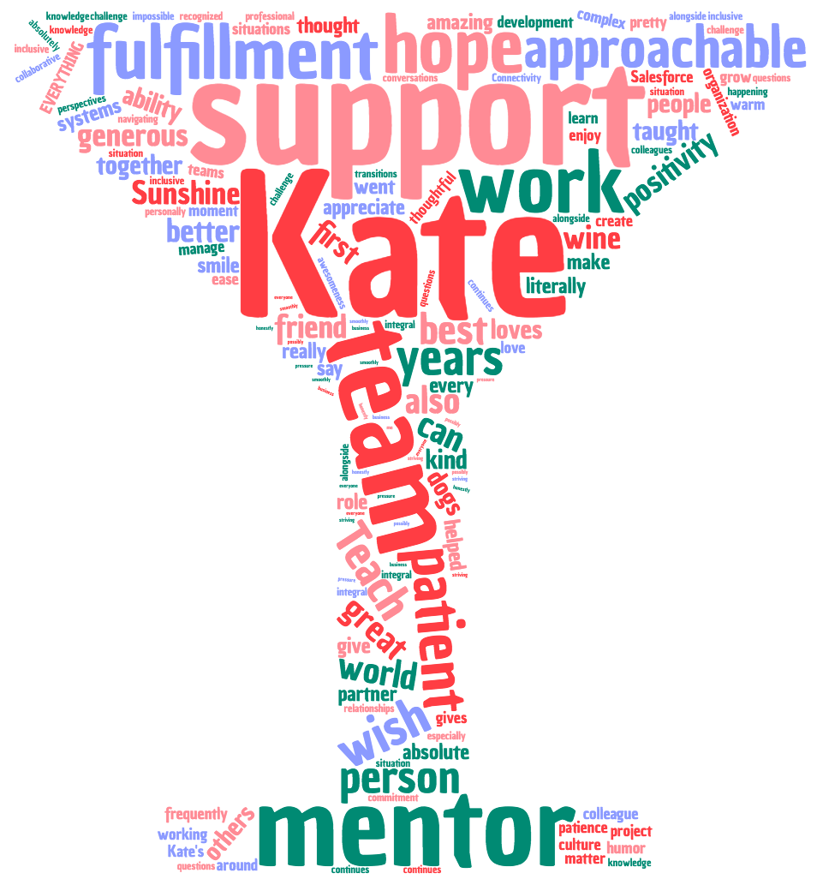
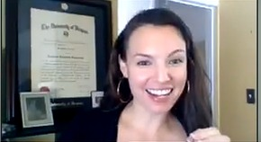

Kate is my absolute best friend at work. A totally awesome partner to work with, an absolutely lovely person, and someone I'd feel lost without at Teach For All. -Sri
An amazing mentor! -Craig
Kate is her last name personified! She is warm, and shines the best light on those around her. Also, killer hoops, raised eyebrow. -Anne
Thoughtful, Reflective, "on it" -Rebecca H
The mastermind -Becca
RELIABLE, TRUSTWORTHY, COMMITTED - AN ABSOLUTE GEM THAT I WOULD ALWAYS WANT ON MY TEAM! -Whitney
She is generous beyond belief! Kate is always smiling, patient, kind, warm, and considerate. She consistently lives into our ideal culture and makes time for her teammates and projects that need her most. -Hannah V
Kate is quite literally a ray of sunshine! She is the most approachable, empathetic individual. She is so patient, cares deeply about ensuring everyone feels included. She’s a great listener and supporter. -Ankana
Kate is patient, thoughtful, kind, and constantly striving to do her best for her team, the org, and the network -Justyna
Kate is the team glue. -Kenny
The Yin to my Connectivity Yang -Radha
The most organized person ever -Kim
Friend; thought partner; coach -Betsy
Glistening smile, shiny eyes, radiating positivity, stand up desk -Lucy
Kate Sunshine is the bubbly keeper of all things strategy & operations on GD - she runs this ship! She's also a rocking manager with so much advice and the best thought partner. -Thaisa
Upbeat. Positive. Solutions-oriented. -Jared
Kate goes above and beyond ALL THE TIME -Sarabeth
Kate Sunshine is a smile on the day you need it most. She is care, concern, respect. She is always striving to be the absolute best person, friend and colleague she can be. -Samantha
I'm sure I'm not the first to make this obvious pun, but Kate literally brings sunshine and warmth to our team - always cheering us on. She is incredibly conscientious, inclusive, and constantly seeks ways to make us better. -Nisha
A super positive team member and a wise sage on all things money and process related -Hannah S
Kate is a critical thought-partnering wizardress and probably a time traveler, because she's always doing impossible things in impossible amounts of time. Also she stands all day, works all night, never eats on camera, and rarely complains - so definitely some type of alien warlock. -Z
Kate is the heart and rock of our team. She is my one of most grounding forces, supportive colleague, amazing friend, brilliant strategist and trusted adviser. -Patty
Kate is on top of her game - she manages the ever-shifting mountain of data that we call our best path with grace and seeming ease. Having to frequently ask her team members to provide updates, etc. is a tricky position to be in, and I really appreciate how approachable she is - it's just so easy and fun to work with her. -Nisha
Her sense of responsibility, her diligence, her commitment to this organization, her wicked sense of humor, and her laugh and smile. -Samantha
Cool and calm under pressure. No drama, straight business, always got it together! -Whitney
Authenticity, willingness to listen and hear perspectives -Ankana
Her generosity. Her sense of humor. Her insight and thoughtfulness on basically any topic you could possibly throw at her. Her ability to BRIO pretty much anyone into having another drink and maybe possibly going out dancing until 4am on a Tuesday night. -Justyna
She is genuinely caring. Smart (obviously). -Kenny
Her experience, positivity, and perspective -Craig
Her ability to never compromise her thoughtfulness/thoroughness/attention to detail/and care for co-workers no matter how intense or complex the task! Also, her endless patience with navigating the most mundane/painstaking of Salesforce questions. -Kim
Fun, collaborative, smart, positive -Radha
I love how Kate is always up for a challenge. When faced with a tough situation, she takes a breath, steels herself and then dives in. This makes her the ideal person to face a tough situation alongside. -Phil
Her positivity in the CRAZIEST situations and times I want to scream... and she somehow manages it with a smile. -Sri
She is lovely, smart, kind, funny and centering. She has the ability to see so many angles and think through a big project very thoughtfully and purposefully. She is just amazing! -Patty
Listening skills; humor; positivity -Betsy
I appreciate her openness to learning, her deep capacity for self reflection, and her focus on continuously improving in the service of both better outcomes and stronger relationships and team. -Rebecca H
warmth and positivity, sense of possibility, support to make ideas happen, helicopter view -Lucy
Kate's positivity and unwillingness to buckle in the face of any challenges are such key reasons for her success in her role! I have never seen an obstacle that could stump Kate Sunshine. Her mind is also insanely organized - she can look at any problem and give you like 5 different solutions. She also has such a presence around her that she puts you at ease by just being nearby. Kate inspires me each and every day and I couldn't have lasted at TFAll without her. She's such a fantastic manager as well - she really knows how to support others to become the leaders they are meant to be. I could literally go on and on about Kate, but the last thing I will say that I admire about her is her desire for growth. She never stops wanting to learn and I appreciate that about her so much because it pushed the rest of us to want more as well. -Thaisa
Kate is always willing to jump in and help out. She's the type of person I want to work with-- our work doesn't overlap all that frequently, but when it does I always enjoy working with her. -Jared
humour, sunshiny outlook on life, down to earth, honesty, supportive, warm -Monica
Willingness to help and answer any question, no matter how simple or complex! -Hannah
Warmth, calm under pressure, rigorous, dependable -Becca
Her ability to bring positivity to all situations, especially those that are challenging! She always is able to find at least one (but often many) ideas that help me to shift my mindset. -Anne
Not appropriate to share at work ;-) -Betsy
early morning budget chats about social innovation; navigating a brave new world of contingent funding with Sri & Alex -Lucy
Working in our old, old cave-like DC office :) -Sarabeth
Too many snarky direct-message comments made on the side of zoom calls to recall. Oh, and at the GC after Kaya announced she is joining Teach For All, Kate almost had a heart attack cause she was worried it wasn't budgeted for. -Sri
Getting the connectivity work going and managing to have fun in the process! -Radha
She interviewed me for my first interview for Teach For All years ago. -Craig
Um stepping back together on everything for the last 8 years?!?! -Patty
I enjoyed sitting on the swings in the TFA DC office talking about her development and things happening on the team. -Rebecca Helmer
Her support (virtually and in person) in my first few months at the org where everything was so confusing. Her simple act of 'naming' this and offering to translate the ways we operate and the language we speak (FULL of acronyms) for a newbie like me was so significant! -Whitney
I loved getting to have Kate lead my Leading Self group. It's been so helpful to connect with her since she has the lens of my work in the group and our team - I feel grateful to have her good thoughts and energy around how I can continue to grow and develop in the ways I have identified. -Hannah V
I wish we had more together but time zones/different teams have been a challenge! But my favorite Kate moment is knowing that she has been a Skype/ping away - especially when I want to give feedback or say something that may be hard for others to listen to - and she coaches me on the spot as to how to do this! -Ankana
Wayyyyyy too much wine at La Jambe before she moved to Richmond. Zoom dates between Sasha/Taco and Kip. -Justyna
Memorable (or maybe we want to forget?) - Kate coaching me through my first few months at Teach For All -Kenny
There are so many! Kate Sunshine is by far one of my favorite people in the whole world - there is never a dull conversation or a moment not filled with support and friendship. One of my favorite nights was when we went to Takoda in DC and just ended up talking for hours about our mutual dislike of the recent election and getting into so many meaningful conversations. I also love when I get to see her dogs on Zoom! Haha We've been through so much in my years at TFAll - the shifts in our team, our roles and our colleagues - and I always know I can count on Kate to be there for me. She's seen me through my biggest lows and offered so much support and love, and honestly TFAll would not be TFAll without Kate Sunshine! -Thaisa
Any moment in person at an in-person event is always a pleasure! -Becca
Kate was my roommate at every event for a solid two years of my TFAll life, and it was EVERYTHING. -Samantha
My first intro to Kate was my onboarding session with her where she shared the "guess who" presentation she'd made about our team. I totally failed, as I didn't know anyone, but LOVED that she'd taken the time to create it. From dancing at an Armenian wedding venue to puzzling through grant requirements on finance calls, I truly always enjoy interacting with Kate. -Nisha
Armenia, Colombia -Monica
6AM hot bikram yoga. Kate killed it and went on to slay the rest of the day (as she does). Whereas I'm pretty sure I blacked out after 15-minutes and went on to take multiple dehydration naps that day. -Z
That time Kate interviewed me and there was an armed police raid of my neighbor's house… -Hannah S.
She was one of my very first meet and greets and took me to a cool Ethiopian coffee spot in DC. The rest is history. -Kim

Giving History (what she's done for us)
Ugh I can't even begin to answer this - everything?!!? Patty
What has Kate not given us? Her time, her commitment, her genius brain! Kate gives everything to our organization and team. She wants us to consistently create inclusive and collaborative environments - and she is always thinking of ways to internalize that within herself as well. Kate has taught me so much in my years at TFAll - I feel like I went through the Kate Sunshine School of Legit Rockstars because I came into my role so new and unassuming, and I emerged someone who can turn out a stellar project plan, organize the world, thought partner like no one's business and express myself in so many ways. Kate helped me with all of this! I am so lucky to count her as a friend and colleague, but she's also my mentor and I look up to her so much and she makes me such a better TFAller and person. I am so lucky to have had her manage me for the past 5 years, because I can honestly say she has helped to shape me and my experience at TFAll. -Thaisa
helping me to understand how Teach For All fundraises; helping me to secure new headcount for Social Innovation & the Connectivity Team; reassuring me about funding priorities -Lucy
She offers me 30 minutes each week to mentor me in my new role. She provides me with some amazing insights on the culture and norms of Teach For All. -Craig
She has taught me so much about how things work at Teach For All, and always has time to help me with things I'm struggling with or that I don't understand. -Hannah S
I've learned a ton through our conversations about management, team culture, and development. -Rebecca H
So much! She listened, helped me gain clarity on some very difficult situations, & boosted my confidence -Monica
Kate gave me my job and all of the subsequent anxiety attacks that have followed ;) -Z
She has given her team and the organization the gift of being such a foundation pillar through any and all transitions. -Becca
Always generous with her time and thought partnership! She has jumped in to manage staff and teams and to support transitions and leads just so seamlessly. She is a real team player - within her team and across teams - and brings so much TFAll institutional knowledge important for our growth and improvement. -Whitney
EVERYTHING! Kate's patience in reviewing budgets alone deserves a medal :) -Hannah V
Been such a great supporter, friend, & mentor -Ankana
Literally EVERYTHING. Kate has played an integral part in my professional development at TFAll across every role I've held here, and has been an anchor for my sanity over the past 4.5 years. -Justyna
She's great at rolling with things! Able to go with the flow always! -Radha
She has helped me build my capacity across GD's systems and is an example of how I hope to help others navigate my own portfolio. -Kim
She gives me grace during times of stress; she has taught me to be a better listener -Betsy
Kate has pretty much taught me everything I should not be doing with donors, mostly through my attempts which she corrected. She's also taught me patience and positivity no matter what is happening -Sri
Time... always time and space to talk -Kenny
Kate always checks in with you personally, she'll send you a personal zoom chat and say "hey, how are you?" and it always feels so generous and thoughtful. -Sarabeth
I have asked Kate so many stupid questions about Salesforce processes, finance systems, etc., and have never once come away from those interactions feeling stupid. Kate has patiently expanded my knowledge of our complex team systems and is a role-model for me as I continue to learn to better manage large amounts of data and keep my mini-team systems running smoothly - Kate somehow does this flawlessly for our entire team! -Nisha
Interests

I know Kate loves a glass of wine to close our her workweek :) -Anne
For everyone to be happy and fulfilled -Kenny
Her dogs! -Hannah S & Kim
Kate absolutely LOVES when staff go out and fundraise directly without bringing in the Global Development team (said very sarcastically). -Sri
Ballet, wine, her pups, and Salesforce to run smoothly :) -Rebecca
Good people, food and wine! And travel! -Whitney
A lot of things - her dogs (shout out to the best twosome - Taco and Sasha), fighting injustice, Happy Hours, yoga (she needs to do the goat one already so that she can tell me about it), her husband and family, and visiting DC to see me (hahaha - well I hope she does). -Thaisa
I know Kate likes folk music and snowballs in the middle of summer :) -Monica
Fidget spinning, reconciling, learning new things, merrymaking -Z
I know that Kate enjoys being outdoors, her adorable dogs, and camping/hiking. I've also heard folklore from the NYC office that she's an excellent baker and used to frequently bring in treats. -Nisha
Barriers
Not being able to have wine. :) -Betsy
Drama! -Whitney
Inequity, ignorance, and people who can't exercise empathy for others! -Thaisa
Team call silence -Zachary
Next Steps
I hope that Kate gives herself the levels of generosity she shares with each of us, and my wish for Kate is that she gets more time to be creative when she would like to. -Hannah V
All the awesomeness in the world to match her awesomeness! -Sri
I wish for her to feel fulfilled and energized in the year ahead. I hope she has continued opportunities to learn and grow -- to build relationships, explore new areas of learning, and thrive personally and professionally. -Rebecca
I wish for Kate many more years of professional fulfillment at TFAll as well as laughter alongside the work! -Becca
I hope to continue to have the opportunity to work closely with Kate and benefit from her ongoing peer support and guidance. And I wish she gets to enjoy all the things she loves with the people she loves! -Whitney
I wish Kate many more happy years at Teach For All - it's been great sharing this journey with you and I hope it continues long into the future! -Phil
I hope that Kate has a trip/interest to give to India and she visits India SOON! -Ankana
I wish that we get more chances to work together -Radha
I hope Kate always continues to speak her mind and be recognized for the absolute boss that she is! There aren't many people like Kate in the world, who give themselves so fully to their work and raise us others at the same time. She's humble and kind, so positive and literally slamdunks every project she works on. I want her to continue to see her greatness and live into it daily because she's the best! I want her to always be recognized for her great work and the great leader she is (and the great leaders she helps to create). I can't wait to continue working with her and seeing her grow into an even better leader as time goes on. -Thaisa
Hope she never leaves us! Not sure what we would do without her. -Kim
Continued life happiness and ability to make a positive stamp on the world! -Betsy